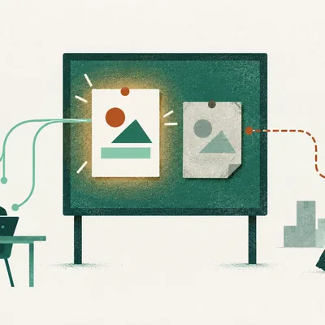
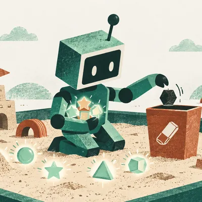
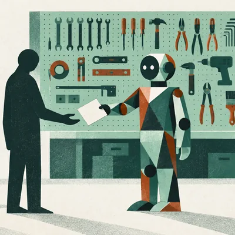
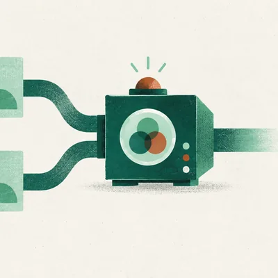
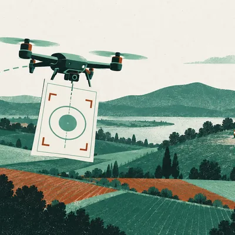
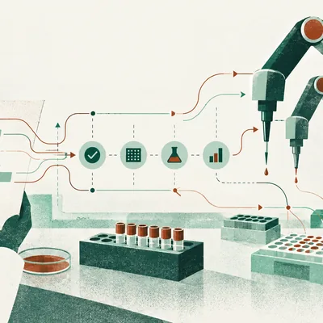
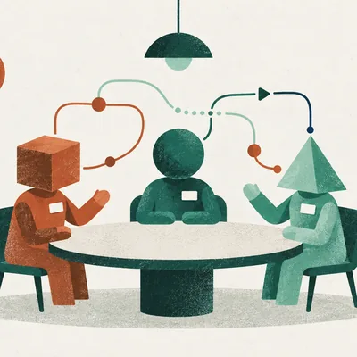
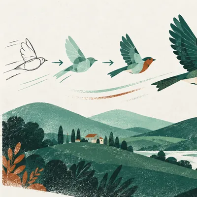
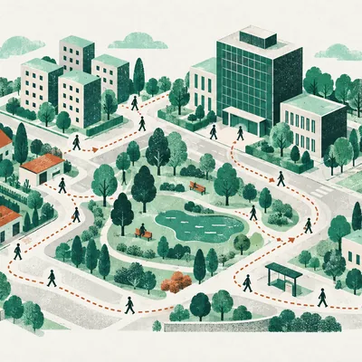
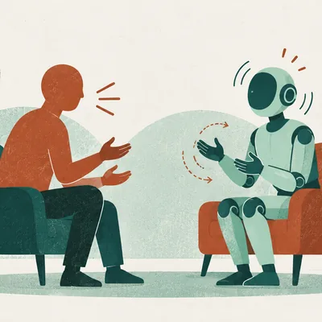

관심 주제
오늘의 변화를 읽고, 오래가는 질문별 경로로 이어 탐색하세요.
질문 경로와 글 찾기
전체 41편 · 날짜가 없는 글은 날짜가 확인된 글 뒤에 둡니다. 날짜는 이 사이트에 수록된 호 기준입니다.
에이전트의 실행과 신뢰
AI가 목표를 세우고 도구를 쓰는 과정에서 실제 결과·실패·감독을 어떻게 확인하는지 살펴봅니다.
함께 읽기 · 결과가 맞아도 실행을 감독할 수 있을까요?
실행 경계에서의 행동 감사와 작업 기록을 사후/실시간으로 감독하는 평가를 나란히 봅니다. 평가 조건과 지표가 달라 성능 순위로 비교하지 않습니다.
함께 읽기 · 기억이 다음 작업까지 이어지려면 무엇이 필요할까요?
질문에 따라 원본 기록을 다시 살펴보는 MemPilot과 장기 운영 설계를 탐색한 Sophia 글입니다. 두 글은 직접 후속 연구 관계가 아닙니다.
- AI의 기억도 다시 찾는 데 품이 듭니다
다음 항목과 이어 읽기
- 내일도 일하는 에이전트에게 무엇을 맡길 수 있을까
수록일 미확인
에이전트 팀의 결과를 어떻게 검증·평가할까요?
세 글은 실패 뒤의 운영, 관리자 수정 권한, 멀티에이전트 서빙 측정을 서로 다른 자료와 조건으로 다룹니다. 비교·확장 경로이며 직접 후속 연구, 같은 벤치마크 또는 성능 순위가 아닙니다.
- 에이전트 연구의 병목은 실패 뒤의 다음 단계에 있다
운영 사례: 공급자가 소개한 장시간 실행·감독 사례로, 실패 뒤 다음 행동을 고르는 구조를 살핍니다.
다음 항목과 이어 읽기
- 관리자 에이전트는 품질을 올리는가: 쌍 실험이 보여 준 수정 루프
쌍 실험: 한 과업의 관리자 수정 권한을 비교한 프리프린트로, 과업과 조건이 제한됩니다.
다음 항목과 이어 읽기
- 멀티에이전트 서빙은 왜 ‘전체 작업’을 재야 할까
서빙 측정 제안: 협업 workload와 작업 전체 측정을 제안한 프리프린트이며, 독립 성능 재현은 아닙니다.
읽는 순서는 질문을 따라 편집한 경로입니다. 날짜순은 아래 글 목록에서 바꿀 수 있습니다.
- 궤도에서 온 첫 답변, 어디까지 믿을 수 있을까?2026-11-01 · 해설
- 멀티에이전트 서빙은 왜 ‘전체 작업’을 재야 할까2026-11-01 · 해설
- 관리자 에이전트는 품질을 올리는가: 쌍 실험이 보여 준 수정 루프2026-10-16 · 해설
- 에이전트 연구의 병목은 실패 뒤의 다음 단계에 있다2026-10-15 · 해설
- 기억하고 집중한다는 모델, 그 말의 범위2026-10-13 · 해설
- 에이전트의 행동, 사용자는 어디서 멈출 수 있나2026-10-11 · 해설
- Gemini 에이전트의 변화는 ‘모델’보다 ‘업무 연결’에 있다2026-10-09 · 해설

공유 메모리를 고친 뒤에도 에이전트가 실수하는 이유2026-10-08 · 해설- 금액이 맞아도 환불을 하면 안 되는 이유2026-10-07 · 해설
- 다 끝난 뒤 85%를 찾던 감독은 왜 실행 전에 49%만 찾았을까2026-10-07 · 해설
- AI의 기억도 다시 찾는 데 품이 듭니다2026-10-07 · 해설
- AI 팀의 실력은 좋은 답을 지켜내는 데서 갈립니다주제 글
- 게임 속 바가지를 깨뜨렸다면, 다음 장면도 달라져야 합니다주제 글

AI가 가상 환경에서 배운 요령에는 지워야 할 기억도 있었습니다주제 글
도구를 잘 쓰는 AI에게도, 쓰지 않을 판단이 필요합니다주제 글- AI가 놀랐다는 사실은 무엇을 발견했다는 뜻일까요주제 글

같은 프롬프트를 두 번 붙이면 무엇이 달라질까주제 글- AI가 일을 못 끝냈을 때 실패한 단계를 찾는 법주제 글

드론 명령의 형식이 맞아도 임무는 끝나지 않습니다주제 글
실험 계획이 로봇의 동작이 되기까지, 확인할 일이 남습니다주제 글- 주제 글내일도 일하는 에이전트에게 무엇을 맡길 수 있을까
사람과 AI의 협업·학습
AI와 함께 일하고 배우며 대화할 때 사람의 선택과 관계가 어떻게 달라지는지 읽습니다.
함께 읽기 · 일을 맡길 때, 어디까지 확인할까요?
실행 환경이 달라지는 Cowork와 문서에 직접 반영되는 Workspace 편집을 함께 읽습니다. 서로 다른 기능을 다루며 연구 계보 관계는 아닙니다.
- 소비자 AI는 대중시장을 얻지 못했나—아니면 돈을 내는 사람만 좁은가2026-10-10 · 해설
- ChatGPT가 만든 화면에서 사용자는 무엇을 고를 수 있을까요2026-10-08 · 해설
- 위키백과 문서가 늘어난 뒤에도 남는 일2026-10-08 · 해설
- 회의에서 AI가 준비한 말을 거둘 수 있어야 하는 이유2026-10-08 · 해설
- Claude가 고친 문서는 누구의 수정으로 남을까요2026-10-07 · 해설
- 노트북을 닫아도 되는 작업, 아직 닫으면 안 되는 작업2026-10-07 · 해설
- AI에게 도움받은 뒤 내 몫으로 남는 공부주제 글

같은 이름을 붙이자, AI 팀의 대화 상대가 달라졌습니다주제 글- 사람들은 ChatGPT에 무엇을 맡기고 무엇을 묻는가주제 글
- AI 활용 격차를 말투의 문제로 돌리지 않으려면주제 글
- AI와 닮은 단어가 사람의 대화에도 늘었을까주제 글
- 같은 AI도 페르소나에 따라 사람으로 선택되는 비율이 달랐습니다주제 글
- 지지하는 대화를 배우게 한 AI, 무엇이 달라졌을까요주제 글
- 즉흥연기 AI는 어디까지 끼어들면 좋을까주제 글
AI와 사회·가상 세계
AI의 사회적 영향과 가상 환경, 영상 제작을 살펴봅니다.
함께 읽기 · 영상의 움직임을 어떻게 먼저 설계할까요?
공개된 LTX 글 한 편에서 3D 구도로 카메라 움직임을 안내하는 제작 방식을 살핍니다. 비교 상대를 임의로 만들지 않았습니다.
- 여러 AI 사업자에게 같은 선호를 전하는 신호, 아직은 약속의 단계2026-11-01 · 해설
- 영국 의회 증언이 던진 질문: 프런티어 AI 감독은 약속으로 충분한가2026-10-16 · 해설

생성 영상의 움직임을 먼저 정한다는 것2026-10-07 · 해설- AI가 채점한다고 알려주자 글은 길어지고 작성 시간은 줄었습니다주제 글

가상 시민의 하루로 실제 동네를 읽을 수 있을까주제 글
듣는 아바타의 고개와 손짓은 어떻게 평가할까주제 글